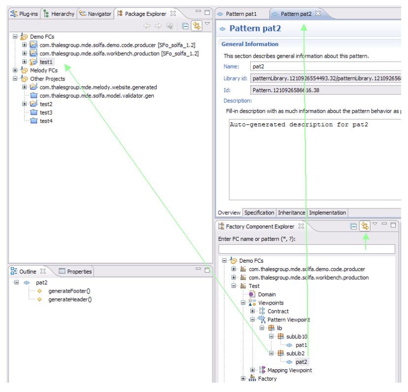

Factory Component Explorer View
The Factory Component Explorer View lists all the factory components you currently have in your workspace.
To close (or reopen) a factory component, you have to close (or reopen) the related project from the Package Explorer view.
The view is available under
 Window > Show View > Other... > SolFa > Factory Component Explorer
.
Window > Show View > Other... > SolFa > Factory Component Explorer
.

Main Features
- Displayed factory components can filtered in entering a FC name or a pattern using wildcards such as *, ?
Only factory components with a name that matches the entered pattern are displayed as shown in the image below.

- As above-mentioned, this view displays factory components under development in the workspace. If the Package Explorer view shows Working Sets,
these ones are also displayed in the Factory Component Explorer view and FCs are located beneath them as their related plug-in projects in the Package Explorer view.
Working sets creations, modifications are handled by the "Configure Working Sets..." action provided in the Package Explorer view menu bar. All changes are caught by the Factory Component Explorer view to keep synchronized with the Package Explorer.
- "Link with editor" button can be checked or not. When checked, that links the Factory Component Explorer's selection to the active editor (only for patterns) and it selects and reveals the project that contains selected FC model elements in the Package Explorer if open.

Actions
Several useful actions are available from the context menu of selected element within the Factory Component Explorer view.
Here is the overall context menu structure:
- New: to create children from selected element.
- Open...: to open an editor that handles the selected element.
- Edit: to edit the selected element. It opens the related wizard dialog to modify selected element attributes.
- Undo: to undo the latest action.
- Undo: to redo the latest undone action.
- Delete: to delete the selected element with its children.
- Validate: to validate the selected element. It opens a dialog that reports the validation result.
The context menu items are revealed or grayed if necessary depending on the selected element.
Examples:


Factory Component

How to create a new Factory Component ?

EGF Perspective
Package Explorer view
Working Sets